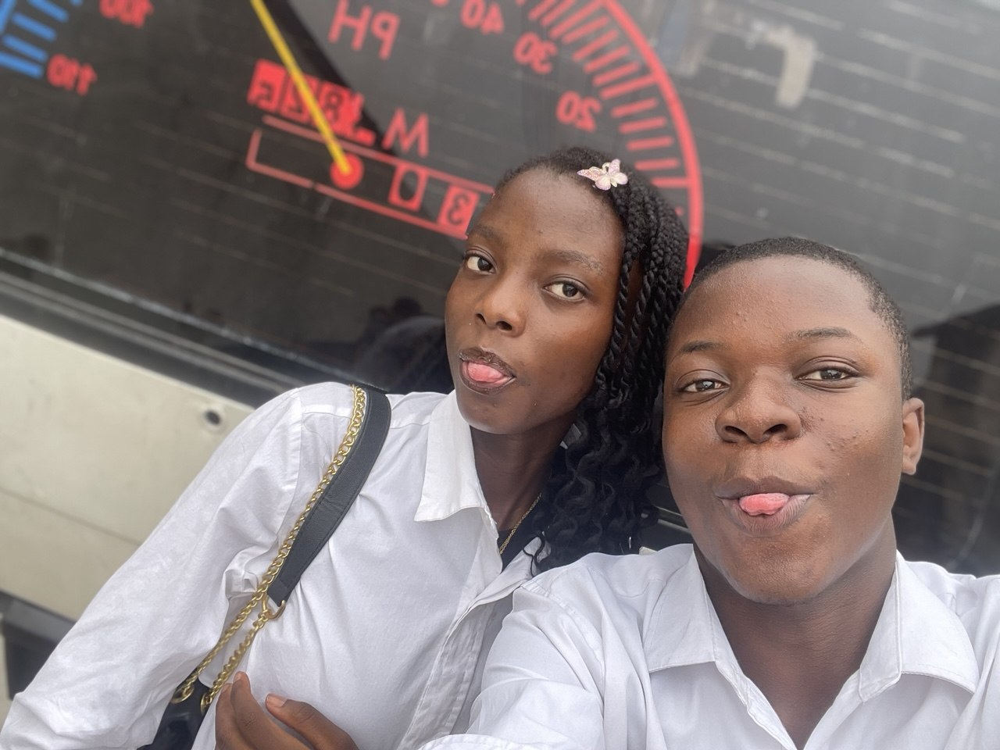

01 / THE BEGINNING
“What if I just message these people?”
That small prompt became the best decision. I saw you with your friend on Freshers’ Day while I was with mine—and somehow the day kept leading back to you.

two strangers, one beginning